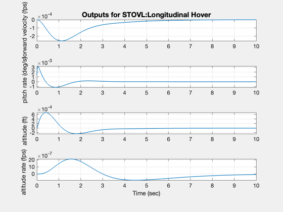
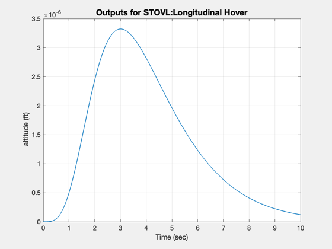
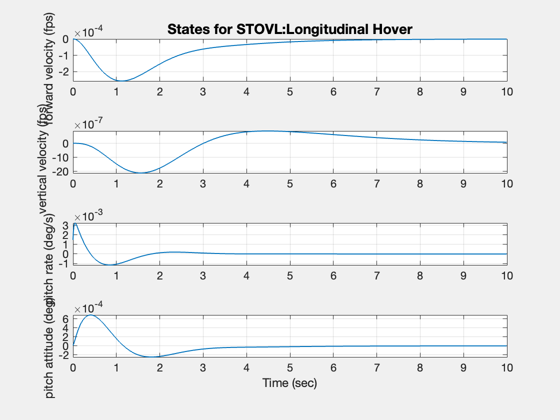
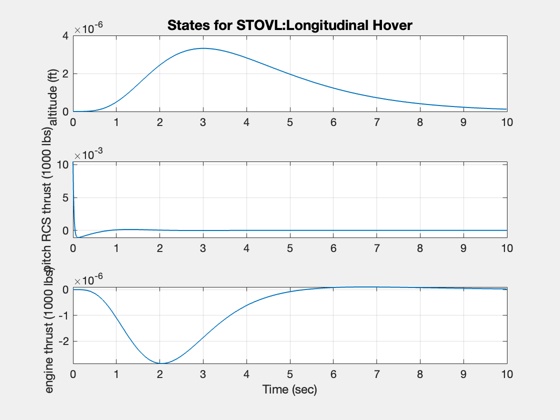

Demonstrate eigenvector assignment using an STOVL Model
The example is taken from:
Lee, H. P., Jr., Yousseff, H.M. and R.P. Habek, "Application of Eigenstructure Assignment to the Design of STOVL Flight Control Systems," AIAA 88-4140-CP.
------------------------------------------------------------------------ See also STOVL, ESAssign, IC ------------------------------------------------------------------------
Contents
%-------------------------------------------------------------------------- % Copyright (c) 2003 Princeton Satellite Systems, Inc. % All rights reserved. %--------------------------------------------------------------------------
System
%------- g = STOVL('longitudinal hover'); eig(g)
ans =
0 + 0i
-0.014 + 0i
0.30556 + 0i
-0.21428 + 0.29724i
-0.21428 - 0.29724i
-50 + 0i
-4 + 0i
Desired eigenvalues
%-------------------- j = sqrt(-1); lambda = [ -1.5 + j*2;... -1.5 - j*2;... -0.667;... -1.0;... -1.25]; vD = [0 0 1 0 0;... 0 0 0 1 nan;... 1 nan 0 0 0;... nan 1 nan nan nan;... nan nan nan nan 1;... nan*ones(2,5)]; fC = [1 1 1 0 0;... 0 0 0 1 1];
Compute the gain and the achieved eigenvectors
%----------------------------------------------- disp(' ') disp('----') disp('Gain') disp('----') k = ESAssign( g, lambda, vD, fC ); disp(k);
----
Gain
----
-0.54281 0.31936 0.69081 0 0
0 0 0 1.0326 0.441
Create the closed loop system
%------------------------------ [a, b, c] = getabcd( g ); aCL = a - b*k*c; disp(' ') disp('-----------------------') disp('Closed loop eigenvalues') disp('-----------------------') eig(aCL)
-----------------------
Closed loop eigenvalues
-----------------------
ans =
-46.456 + 0i
-1.5001 + 2i
-1.5001 - 2i
-0.66639 + 0i
-1.7657 + 0i
-1.0047 + 0i
-1.244 + 0i
Digitize the closed loop system using a zero order hold
%-------------------------------------------------------- % Simulate %--------- g = set( g, aCL, 'a' ); x = [0;0;0;0;0;pi/180;0]; IC( g, x, 0.01, 1000 ); %-------------------------------------- % $Id: 1acba9f8ba5adcf7eef9b1cd8f416a054662b3e3 $   